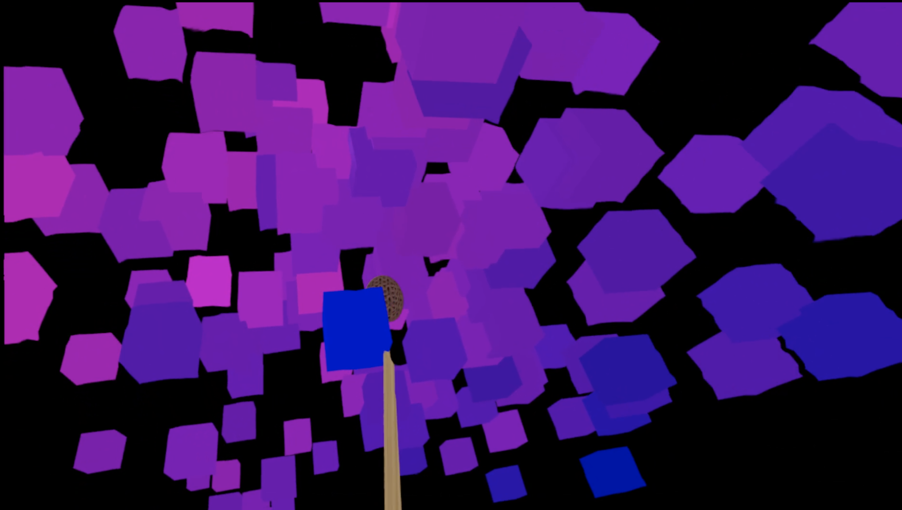
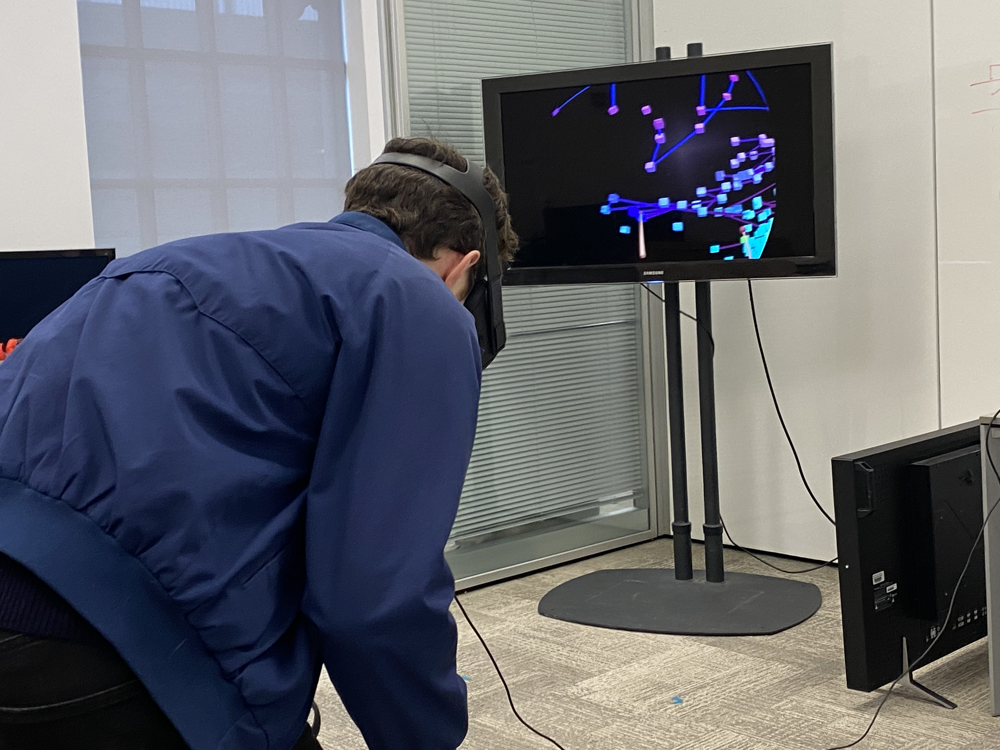
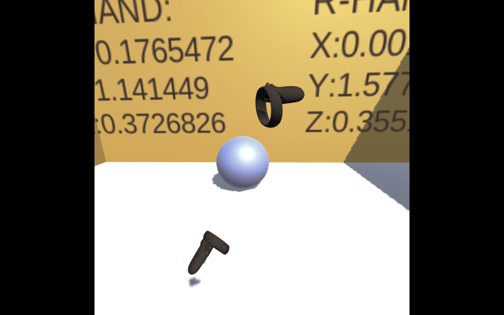
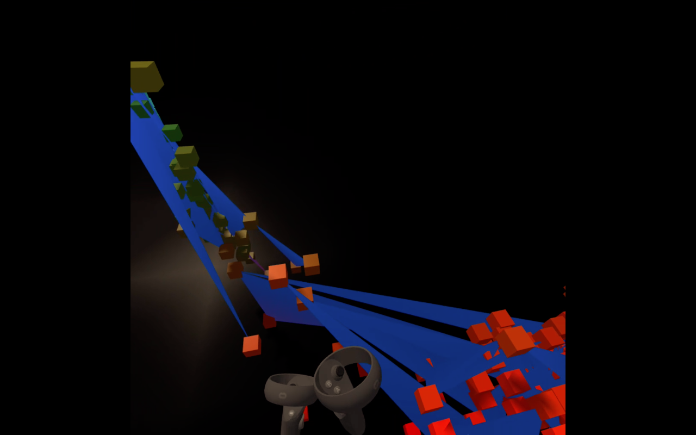
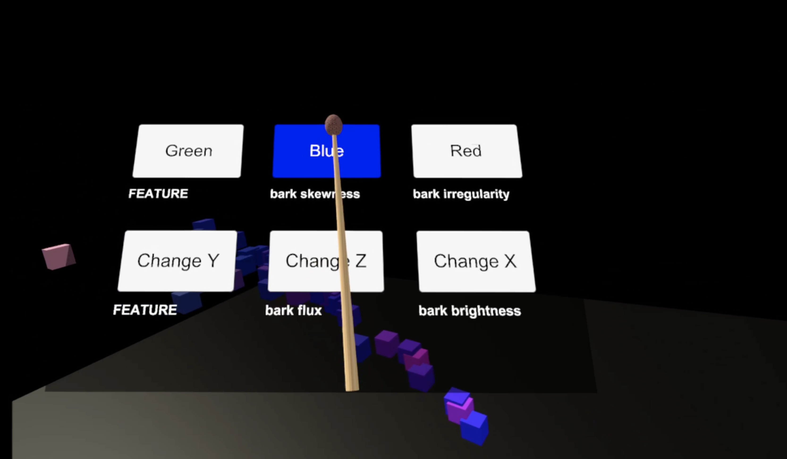
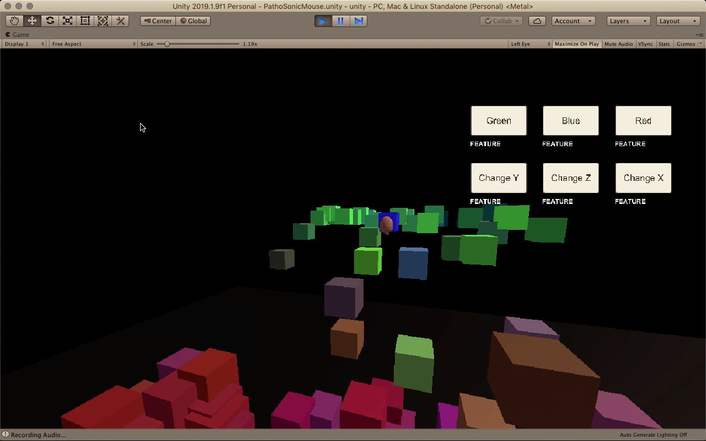

 [Screen capture from the Oculus Quest of the plotted feature space at human scale. The analyzed audio is of a 10 second bird.]
Audio in Virtual Reality (VR) experiences has been explored in their diegetic and non-diegetic qualities (i.e., as intrinsic or extrinsic sonic cues to the VR experience) in relation to the user’s path throughout the experience (Exploring the Effects of Diegetic and Non-diegetic Audiovisual Cues on Decision-making in Virtual Reality 2019). VR has been used in music research for spatial and timbre control (Graham et al. 2017), for gesture-based spatialization (Composing Space in the Space: An augmented and Virtual Reality Sound Spatialization System 2019), among other uses. Recent research on extended reality (XR) interfaces led Johnson, Damian, and Tzanetakis (OSC-XR: A Toolkit for Extended Reality Immersive Music Interfaces 2019) to build a Unity OSC library (UnityOscLib) that enabled three immersive musical instruments in which our research is inspired. While their research is focused on user interface design, our focus is on the immersive quality of the user within timbre analysis. In other words, our goal is to re-purpose immersion with timbre descriptors so as to enable a new kind of sound exploration based on statistical distribution and 3D mapping to human scale. Our research is primarily inspired by the open source work in concatenative synthesis in VR by Max Neupert (Neupert 2017), which is based on William Brent’s open source software library for Pure Data (pd): timbreID (Brent 2010). Neupert’s VR display of Brent’s timbre descriptors enabled a novel approach to sound analysis and exploration, that our research aims to expand further with sound spatialization and user immersion. While Neupert’s research is aimed at solving performative issues when performing corpora of concatenative synthesis (depth perception and user interaction), his focus within VR differs from ours. In PathoSonic, we focus on how space exploration can be linked to timbre exploration, bringing sound analysis corpora closer to human scale, and to our virtual and physical proprioception.
In 2013, a large VR instrument was built at UCSB’s AlloSphere which enabled “groups of participants to see, hear, and explore data as a team” (Kuchera-Morin et al. 2014). Their research was focused on user interaction and data analysis exploration, but the scale of their venture is at once its highest quality and its greatest limitation. The portability of the Oculus Quest system, as well as our open source integration of Unity and pd, guarantees sound exploration and multi-user experience to occur to anyone using this headset. Our limitation relates, similarly, to cost and equipment availability, but this technology is becoming more accessible, especially within academic and research contexts for which PathoSonic is originally intended. Wakefield et al (Wakefield et al. 2014) designed a collaborative live-coding environment using UCSB’s AlloSphere, where immersion was arrived by spatialized sound and stereoscopic display. Within our VR experience, performing is possible thanks to Oculus’ network and a simple avatar representing each user, and immersion is arrived at by a shared virtual space in which sound is spatialized within a pd patch.
PathoSonic is a VR experience where a participant interacts with sound visualization in space, performing analysis points and sequencing them in time.
 [A participant performing PathoSonic. Other than to display the participant's view on screen, the experience is completely wireless.]
The goal of this research is to leverage affordances of virtual reality technology to visualize sound through different levels of performance-based interactivity that immerses the participant’s body in a spatial virtual environment. Through implementation of a multi-sensory experience, including visual aesthetics, sound, and haptic feedback, this investigation seeks to explore inclusive approaches to sound visualization, making it more accessible to a wider audience including those with hearing, and mobility impairments.
This section describes the method of implementation we undertook to develop PantoSonic VR Experience.
 [PathoSonic - First Iteration. We began an early exploration by experimenting with sound performance in Virtual Reality (VR) by using the participant's movement in space as the virtual instrument: https://youtu.be/aKzH-xeEbCA]
We analyzed a sound file using William Brent’s open-source timbre analysis library, timbreID (Brent 2010). A ten-second sound file of a bird chirping was used, with a sampling rate of 44.1 kHz. With an analysis window size of 4096, we simultaneously reduced the size of the point-cloud and increased the length of each sonic point on the cloud. In other words, a larger sound grain enhances the performative aspect of the experience, since the playback for each point lasts a perceptually-friendly 10 milliseconds.
We imported the analysis data as a plain text file into our Unity project, by loading the data into internal arrays that point to onsets to each grain start point in the sound file. Therefore, we used all the timbre descriptor data about each grain to generate a 3D visualization surrounding the participant. The participant is given a simple user interface (UI) to select which timbre feature is plotted on each XYZ axis, as well as on RGB color space. Thus, up to six different features of the sound file can be visualized at once. We based the internal logic of this visualization on Neupert’s 2017 implementation of timbreID in VR and on Brent’s recent examples using GEM’s 2D display. However, by bringing these two together into the wireless experience of the Oculus Quest, we aim to explore the human scale of the visualization and the different type of gestural movements that need to be carried out by the participant. Therefore, and since some of the points are intentionally farther away, the participant is given virtual mallets to bang each point in the cloud to hear playback.
 [PathoSonic - Second Iteration. In this early iteration of the Virtual Reality (VR) experience, participants could change the visualization through the Oculus Touch controller input. The audio was not recorded fort this video: https://youtu.be/aT95KLiOKP4]
With the ability to play each point, we brought a Unity-based version of Brent’s newly implemented sequencer into the experience (Brent 2019). The participant can draw lines across several points holding a controller’s trigger while hovering through the points. Each line cab be stored and played back in sequence, randomly, at different speeds, and in different pitch transpositions. Multiple lines can be drawn and stored, and they can all be triggered simultaneously or at deferred times. Moreover, the user can disable the sequencer and instead bang the entire line containing all points, listening to all points at the same time, as if it were a single sound composed of a selection of grains. The envelopes of this sound can be changed, as well as speed and transposition. While the internal logic of the line drawing, selecting, and sequencing is made within a C# script in Unity, the playback is done entirely within a pd patch loaded via libpd for Unity (Brinkmann and 2010-2018 2019). We based our Unity and libpd integration with PlayDot’s repository (PlayDots 2019).
Each point is played back through the Oculus headset’s speakers, which have only two channels to create a stereo image. The Oculus Spatialization Toolkit for Unity offers immediate spatialization tools for the programmer, which we use for some ambience and other UI-related sonic icons. libpd, however, is loaded as an audio plug-in that bypasses said toolkit. Therefore, any spatialization needs to take place within the loaded pd patch. In order to create a virtual sonic image of the points in space, the orientation and position data of the headset are sent to the pd patch so as to move the spatial image accordingly. Since this is the first iteration of PathoSonic, our implementation of the spatial image does not include any advanced HRTF or other, more complex spatialization tools. Furthermore, since libpd is an embedded version of pd’s vanilla objects —i.e., only its internal objects and a handful of pre-packaged externals, none of which meant for audio spatialization— these tools would need to be made accessible and compiled to work within libpd, a task that is yet to be fulfilled. Therefore, we used a home-brewed combination of amplitude panning and point-source spatialization, which we found more than useful for our current purposes.
For the design of the VR experience, we used the analysis file to display the point-cloud in an immersive virtual environment with each point represented as a cube that responds whenever the participant interacts with it. Participants interact with the point-cloud using a virtual percussion mallets that allow them to reach all points (near and far in 3D space), in a similar matter that one would if they was playing a percussion instrument. Using percussion mallets during the design of the VR experience, however, may limit the gestural palette of the participant to percussive gestures. In other words, the participant might choose to only interact with the virtual cubes as they would with a real percussive objects. While we chose the visual representation of the percussion mallet to make interaction readily apparent to the participant, our goal is to use the novel hand tracking system released by Oculus to encourage a different kind of gestural motion and, thus, new performative grounds can be explored.
 [PathoSonic - Third Iteration. A participant can change the sound visualization through a user interface that can be toggled on and off. This interface switches between features and plotting in color space (above: r,g, and b) and in 3d space (below: x,y,and z)]
We designed the playback of the grains using pd’s embedded library libpd instead of using Unity’s integrated audio engines directly. By using pd, the performer is thus engaged with a performance patch made within an open-source environment for music programming with a long history of electronic music performativity that enhances the participant’s sonic exploration. We also incorporated sonic and visual spatial design elements in the virtual environment and it became the focus of the experience since it determined the type of performativity and the limits of the participant’s immersion. The human scale of the point-cloud was readily available by the Oculus’ room-scale capability and head/hand tracking and scaling. Thus, the normalized data cloud was easily adapted to fit into a virtual room of equal size to the performance space defined by the participant’s own dimensions and spatial choices. The audio needed a different approach than that which was made available with the Oculus audio spatialization toolkit for Unity. However, when using libpd with Unity, we bypassed this toolkit and recreated the position of the performer within the performance patch to locate virtual sources tethered to the position of each activated cube of the point-cloud.
We developed the VR experience for the Oculus Quest platform, making it more accessible in various types of environments since it’s a standalone head mounted display (HMD) that is easy to set up and does not require external hardware. The six degrees of freedom (6DoF) hand controllers of the Oculus Quest allowed us to include haptic feedback capability into the experience enabling the performer to receive a tactile response whenever they touch a data point, visualized by a cube, in the virtual environment. Hand and head tracking capabilities of the Oculus Quest enabled the performer to freely navigate the virtual environment, choosing where to look and what to interact with. This affordance enables each participant to have an unique experience each time they enter the virtual environment. When a performer is immersed in the VR experience, they can freely change the sound visualization through a user interface that can be toggled on and off, further strengthening the uniqueness of each participant’s performance and visualization of the sound file.
 [PathoSonic - Fourth Iteration. This iteration of the experience is only meant to show sound interaction using only Mouse input. This is not the full Virtual Reality (VR) experience since it does not use the Oculus and its controllers: https://youtu.be/nnvPOeIh_fY]
We have presented PathoSonic as a performative experience of feature space that enhances our perception of sound by exploring the interaction between feature and performative space. Further testing and analysis of data will be conducted to evaluate accessibility implications of the experience. Future work consists in integrating networked performance and real-time analysis into the Unity project. A timbre analysis library is missing from the Unity framework and this would constitute groundbreaking work in research within VR. A networked performance would enable multiple users to perform the same or different sound files displayed in the same virtual context.
This research was made at ACCAD with the gracious participation of Taylor Olsen, and the guidance and support by Dr. Marc Ainger and the ACCAD team.
Brent, William. 2010. “A Timbre Analysis and Classification Toolkit for Pure Data.” In Proceedings of the International Computer Music Conference, ICMC 2010. https://quod.lib.umich.edu/i/icmc/bbp2372.2010.044/1.
———. 2019. “TimbreID.” GitHub Repository. https://github.com/wbrent/timbreid; GitHub.
Brinkmann, Peter, and the libpd team 2010-2018. 2019. “Libpd.” GitHub Repository. https://github.com/libpd/libpd; GitHub.
Composing Space in the Space: An augmented and Virtual Reality Sound Spatialization System. 2019. Zenodo. https://doi.org/10.5281/zenodo.3249329.
Exploring the Effects of Diegetic and Non-diegetic Audiovisual Cues on Decision-making in Virtual Reality. 2019. Zenodo. https://doi.org/10.5281/zenodo.3249315.
Graham, Richard, Brian Bridges, Christopher Manzione, and William Brent. 2017. “Exploring Pitch and Timbre Through 3D Spaces: Embodied Models in Virtual Reality as a Basis for Performance Systems Design.” In Proceedings of the International Conference on New Interfaces for Musical Expression, 157–62. Copenhagen, Denmark: Aalborg University Copenhagen. http://www.nime.org/proceedings/2017/nime2017_paper0030.pdf.
Kuchera-Morin, JoAnn, Matthew Wright, Graham Wakefield, Charles Roberts, Dennis Adderton, Behzad Sajadi, Tobias Höllerer, and Aditi Majumder. 2014. “Immersive Full-Surround Multi-User System Design.” Computers and Graphics 40: 10–21. https://doi.org/https://doi.org/10.1016/j.cag.2013.12.004.
Neupert, Max. 2017. “Exploring Concatenative Synthesis Units in Vr.” In.
OSC-XR: A Toolkit for Extended Reality Immersive Music Interfaces. 2019. Zenodo. https://doi.org/10.5281/zenodo.3249319.
PlayDots. 2019. “UnityPd.” GitHub Repository. https://github.com/playdots/UnityPd; GitHub.
Wakefield, Graham, Charlie Roberts, Matthew Wright, Timothy Wood, and Karl Yerkes. 2014. “Collaborative Live-Coding with an Immersive Instrument.” In Proceedings of the International Conference on New Interfaces for Musical Expression, 505–8. London, United Kingdom: Goldsmiths, University of London. http://www.nime.org/proceedings/2014/nime2014_328.pdf.